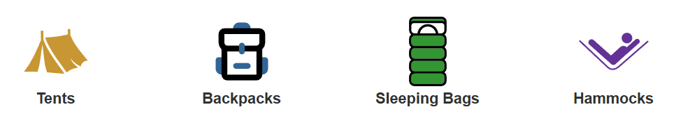

S03 Atividade Individual: Expandir Inventário
Visão Geral
Muitas das alterações que você já fez foram para preparar o site para poder escalar para quantos produtos você desejar. Nesta atividade, você adicionará produtos organizados em quatro categorias: Barracas, Sacos de Dormir, Mochilas e Redes. Você precisará alterar a página de índice para mostrar as quatro categorias e, em seguida, construir uma página dinâmica de listagem de produtos que buscará os produtos de uma API e os exibirá.
Instruções
Conclua a seguinte Tarefa individualmente. Cada estudante escreverá o código para sua própria cópia.
Requisitos Principais
Iniciar a Tarefa
- Visite a cópia da equipe do quadro do Trello para o projeto.
- Adicione-se à
Individual Activity W03: Expand inventorytarefa. - Se mais ninguém tiver feito isso ainda, mova-a para a
'Doing'lista. - Leia os detalhes do cartão.
- Certifique-se de fazer pull de quaisquer alterações do GitHub antes de prosseguir.
- Crie uma nova branch chamada
yourinitials--individual3.
Refatorar
- Crie um novo diretório em src chamado product_listing.
- Adicione um novo index.html arquivo a esse diretório.
- Crie um product-listing.js arquivo no js diretório.
- Adicione HTML básico à nova index.html página, como o cabeçalho, rodapé, estilos, etc. Você pode querer usar apenas o src/index.html como ponto de partida. Em seguida, remova o conteúdo desnecessário, incluindo o banner e o texto.
✔ Adicionar uma nova página ao site exige que o arquivo vite.config.js seja atualizado para informar o Vite sobre isso, ou a compilação falhará.
- Mova o JavaScript do main.js que é responsável por renderizar a lista de produtos para o novo product-listing.js arquivo. (Este é, de fato, a maior parte do conteúdo atual do main.js.)
- Abra product_listing/index.html no navegador para garantir que as barracas ainda sejam renderizadas.
Você precisará corrigir alguns caminhos para que tudo funcione corretamente. Por exemplo, a nova página não conseguirá encontrar o arquivo CSS nem o novo arquivo JS que você criou até que os caminhos dos arquivos sejam corrigidos. Não se preocupe em corrigir as URLs das imagens ainda. Elas mudarão novamente de qualquer forma e você as corrigirá mais tarde.
- Exiba as quatro imagens das categorias de produtos na
src/index.htmlpágina abaixo da imagem principal.
Captura de tela da Exibição de Categorias de Produtos Você pode usar seus próprios ícones ou as imagens svg fornecidas aqui:
- Vincule cada um dos elementos de categoria a product_listing/index.html.
Certifique-se de passar ocategorycorreto como parte da URL (tents, backpacks, sleeping-bags ou hammocks).Se você precisar de um lembrete de como adicionar um parâmetro de URL a um link, confira a função de modelo em
ProductList.mjs. Ela tem um exemplo de passagem de um parâmetro na URL.


Variáveis de Ambiente
Esta aplicação será alterada para usar um servidor de API que fornecerá endpoints para acessar tarefas como obter informações do produto, fazer login de usuários, enviar pedidos, etc. Durante o desenvolvimento, são feitas alterações que não precisam aparecer no ambiente de produção. O servidor de desenvolvimento é um ambiente de testes usado durante o desenvolvimento da aplicação. A aplicação pode ser alterada sem se preocupar com a aplicação em execução no servidor de produção que possui os dados reais que devem ser protegidos.
Esta separação é muito comum no desenvolvimento. No entanto, isso significa que você terá que alterar a URL que está sendo usada dependendo se o código está sendo executado em um ambiente de desenvolvimento ou em um ambiente de produção.
Variáveis de ambiente são uma maneira de armazenar valores que são específicos para o ambiente em que o código está sendo executado. Por exemplo, você poderia ter uma variável que armazena a URL do servidor de desenvolvimento e outra variável que armazena a URL do servidor de produção. As variáveis de ambiente fornecem valores que mudam automaticamente dependendo de onde o código está sendo executado. Na maioria das vezes, você as cria em um arquivo chamado .env (dotenv). Você está usando o Vite como ferramenta de compilação e ele tem a capacidade embutida de trabalhar com esses arquivos. Ele procurará automaticamente por um arquivo .env e, se encontrar um, disponibilizará as variáveis nele definidas por meio de uma global especial: import.meta.env.
Como o Vite é para construir projetos front-end onde todo o código termina no navegador, ele nos dá uma maneira de controlar quais das variáveis de ambiente ficam disponíveis no código voltado para o cliente. Qualquer variável que você queira usar no código que enviar precisará ser prefixada pela VITE_ sintaxe.
- Abra o arquivo .env.sample no src diretório.
- Procure pela variável chamada
VITE_SERVER_URL. - Observe que a URL do servidor é fornecida como
VITE_SERVER_URL=https://wdd330-backend-osp8.onrender.com/.Esta variável de URL do servidor não é algo que você precisa manter em segredo. Ela precisa estar disponível no código. Ela tem o
VITE_prefixo. - 🗝️ Renomeie o .env.sample para .env usando Arquivo->Salvar Como. O Vite agora verá o arquivo e usará as variáveis contidas nele.
É uma prática comum fornecer um exemplo com um nome diferente para deixar claro que não é o arquivo real.
Você pode estar se perguntando por que esse arquivo é chamado .env.sample. As variáveis de ambiente geralmente contêm informações confidenciais e, por isso, é comum não incluir esses arquivos no repositório Git do projeto. Se você der uma olhada no arquivo .gitignore, verá que os arquivos .env já estão sendo ignorados. Arquivos nomeados dessa forma nunca serão rastreados pelo Git.
A próxima questão é: como as variáveis de ambiente são usadas no ambiente de produção? Isso é abordado abaixo.
Quando o código for implantado no Render (o ambiente de produção), ele precisará saber a URL do servidor que deve usar. Como o arquivo .env não fará parte do repositório, ele é configurado de uma maneira diferente.
Apenas um membro da sua equipe precisa fazer a seguinte manutenção.
- Faça login no Render e abra o projeto.
- Navegue até Configurações do Site->Variáveis de Ambiente.
- Adicione uma nova variável.
- Insira
VITE_SERVER_URLcomo a Chave. - Insira a URL do servidor
https://wdd330-backend-osp8.onrender.com/como o Valor. - Certifique-se de Salvar a nova variável.
Obtendo dados de uma API
Em seguida, modifique o código para obter os dados do produto de uma API em vez do arquivo JSON local. Devido à forma como ele está estruturado, esse código deve ser relativamente fácil.
- Abra
ProductData.mjs. -
No construtor, um caminho foi definido para os produtos. Esse caminho era baseado na categoria de barracas e seria usado posteriormente para obter os dados. Com a API, a categoria no DataSource não é necessária. Ela será passada quando necessário, o que torna o DataSource mais flexível.
Adicione a seguinte linha ao topo do arquivo:
const baseURL = import.meta.env.VITE_SERVER_URLObserve a variável de ambiente definida no
.envarquivo. - Remova a categoria e o caminho do construtor.
- No
getDatamétodo, adicione um parâmetro decategorye aproveite esta oportunidade para alterar o fetch para usar async/await. Altere agetDatafunção para ficar assim:async getData(category) { const response = await fetch(`${baseURL}products/search/${category} `); const data = await convertToJson(response); return data.Result; }Por que retornar
data.Result? Antes era simplesmentedata. Os dados enviados de volta da API estão estruturados de forma diferente. Você também terá outras correções a fazer por causa disso. - Abra productList.js para edição.
- Altere a linha no
init()método onde os dados são recuperados. Ele deve ficar assim após as alterações:const list = await this.dataSource.getData(this.category);
Agora você deve ver os produtos listados ao clicar em um dos links, mas há dois problemas. O primeiro é que nenhuma imagem está sendo exibida. O segundo é que todos os links estão mostrando a mesma lista de produtos.
Obtendo os produtos corretos
Você deve passar a categoria na URL para a página product_listing. Você precisa recuperá-la a partir do parâmetro em product-listing.js. Depois, envie-a para a ProductList classe. Lembre-se de que um método foi criado no arquivo utils.mjs que obtém parâmetros de uma URL.
Você moveu muitas coisas de lugar. Neste ponto, seu arquivo product-listing.js deve ser algo como isto:
import ProductData from './ProductData.js';
import ProductList from './ProductList.js';
import { loadHeaderFooter, getParam } from './utils.mjs';
loadHeaderFooter();
const category = getParam('category');
// first create an instance of the ProductData class.
const dataSource = new ProductData();
// then get the element you want the product list to render in
const listElement = document.querySelector('.product-list');
// then create an instance of the ProductList class and send it the correct information.
const myList = new ProductList(category, dataSource, listElement);
// finally call the init method to show the products
myList.init();Corrija a página de Detalhes do Produto
Se tentar clicar em um dos produtos para ver os detalhes, você notará que está com erro. Você precisará fazer algumas das mesmas alterações em product.js e productDetail.js que você fez para a listagem de produtos.
Existem alguns lugares que você precisa verificar para fazer isso.
- Atualize a URL listada para um cartão de produto.
- Atualize o
findProductByIdmétodo para consultar a API diretamente sobre o produto com base no parâmetro ID. O endpoint da URL da API deve ser assim:${baseURL}product/${id} - Assim que conseguir fazê-lo funcionar, você descobrirá que a imagem está quebrada. Você precisa descobrir o motivo. Veja abaixo mais detalhes sobre isso.
Corrija as imagens
A estrutura de dados dos produtos mudou ligeiramente. É por isso que as imagens estão quebradas. Analise os dados que retornam da API e descubra como corrigir esse problema.
Você pode usar a imagem PrimaryMedium para o productList e PrimaryLarge para o productDetail por enquanto.
Corrija o título
O título da página de listagem de produtos atualmente diz: Produtos em Destaque. Adicione a categoria a ele para que fique parecido com isto:
Top Products: Backpacks
Se a categoria backpacks foi selecionada.
Exemplo de Solução
Não NÃO abra o exemplo de solução até ter trabalhado nesta atividade em equipe por pelo menos uma hora. Ao final da hora, se você ainda estiver enfrentando dificuldades com alguns dos requisitos principais, fique à vontade para ver o exemplo de solução e usá-lo para ajudá-lo a concluir seu próprio código. Mesmo se usar o código de exemplo para ajudá-lo, fique à vontade para relatar que concluiu os requisitos principais, se tiver escrito o código por conta própria. Lembre-se, este é apenas um exemplo.
Exemplo de Solução
A solução de exemplo pode ser encontrada no src diretório: Repositório WDD 330 Sleep Outside week3-Individual branch.
Finalmente
Conclua este trabalho de projeto individual finalizando seu trabalho individual e, em seguida, coordenando com sua equipe.
- Faça commit e envie suas alterações.
- Reúna-se com sua equipe e discuta quais alterações (branch) do membro da equipe vocês gostariam de
manter.
Sua equipe manterá apenas uma. - Envie uma requisição para a branch que vocês decidiram manter.
- Revise o Pull Request, feche-o e mescle a branch de volta na branch Main.
- Mova o cartão do Trello para a
"Done"coluna.
Envio
Retorne ao Canvas para relatar seu trabalho.